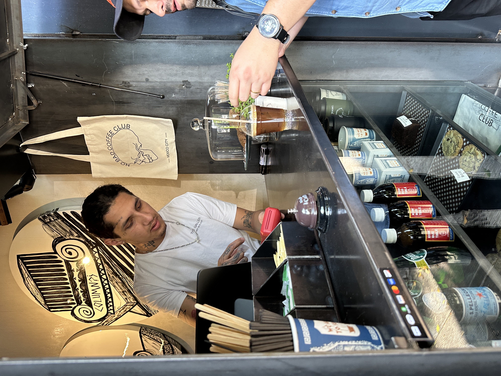
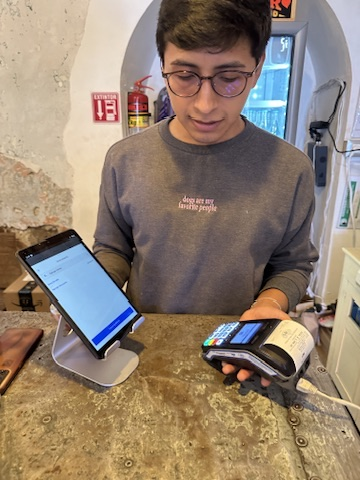

Square, Block Inc.
Launching Square in Mexico
A localized payments experience built through in-country research and cross-border partnership.
The Challenge
Square sellers in Mexico were already using the POS for inventory and reporting—but couldn't accept payments.
To unlock QR codes, payment links, and card payments, we needed to partner with a local payment processor (dLocal) and hardware provider while maintaining a cohesive Square experience.
Users had a relationship with Square, not dLocal—so the experience needed to feel unified even when crossing systems.
Co-created and executed research in Mexico City—testing the full UX live with sellers, then iterating based on real feedback.
The Approach
In-Country Research
Partnered with product design to co-create a research plan. Visited coffee shops in Mexico City to test the end-to-end experience with local sellers—validating flows, framing, and language through live feedback sessions.



The Craft
Cross-Border Partnership
Worked closely with dLocal's design team to create seamless handoffs between Square and their surfaces. The payment processing and onboarding lived in their system, but users needed to feel like they never left Square.
Also partnered with a regional hardware provider to enable terminal payments—expanding the solution beyond software.
Square Ecosystem
dLocal Infrastructure
Compliance
Working with legal
Partnered with legal to finalize compliant language for the Mexican market, ensuring all payment disclosures and terms met local regulatory requirements.
Localization
Beyond translation
Collaborated with localization to ensure the Spanish wasn't just translated but culturally resonant for Mexican sellers—adapting tone, terminology, and framing.
The Impact
Shipped to Mexico
Launched QR codes, payment links, and card payments with hardware support
LATAM framework
Created a scalable UX framework for future expansion across Latin America
Company initiative
Project went from proof-of-concept to prioritized company initiative
Reflection
"This project taught me the value of being on the ground—seeing how real users interact with your work in their environment changes everything. Building for scale while solving for the specific needs of a new market is a balance I'll carry into every expansion project."